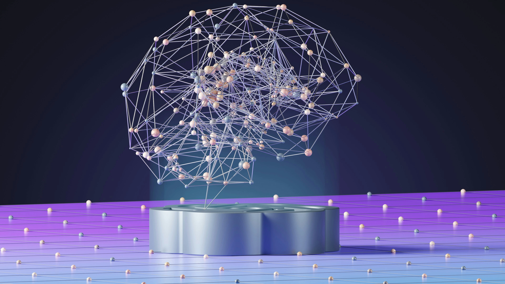

Table of Content
- Advancing Technical Capabilities
- Human And Artificial intelligence Relationship
- Creating High Quality Information
- Personalization & Customization
- Expanding Accessibility
- Ethical & Safe Use generative AI
- Creativity and Innovation
- Cross Disciplinary Applications
- Conclusion
What is the main goal of generative ai or AI gen
First we discuss Normal AI or Tradition AI vs Generative AI. General AI only predicts or classifies and gives some output based on user input system but does not generate data but generative AI( AI gen ) system based on Large language models(LLM). LLM are trained with immense amounts of data and use self supervised learning . The main goal of generative AI is to improve the skills of artificial intelligence systems to produce make of content that mimics or creates original works like to what a human might produce. Here’s an in-depth look at primary goal of generative ai model and their elements:
1. Advancing Technical Capabilities:
Advancing Technical Capabilities is improve the underlying technologies of generative AI ( AI Gen ), implement their performance and efficiency & applicability.
Use of Advancing Technical Capabilities:-
I)Algorithmic Improvements is innovations in model architectures example more advanced versions of Generative Adversarial Networks or transformers. which improve the quality & make of generated content. II)Scalability is the enhancing the ability of generative models to scale with larger datasets & more complex tasks solve the problem . III)Efficiency is developing more efficient training methods & algorithms to reduce computational resources & time required for model training.
2.Human And Artificial intelligence Relationship:
To create systems where Artificial intelligence and humans work together more effectively and enhancing productivity & decision-making to improved computer system.
Advantage of Human And Artificial intelligence Relationship work:-
Augmented Decision Making Generative AI tools can analysed huge amounts of data to provide insights or options that support human decision making and also use Interactive Assistants can aid in intricate tasks by creating drafts, offering enhancements, and streamlining collaborative efforts. For Educational purpose Generative AI is used to create personalized learning knowledges.
3. Creating High Quality Information
Generative AI produce synthetic data that can be used for training other normal AI or Tradition Ai models and filling gaps in datasets or improving simulations.
Advance use High Quality Information:-
Data Augmentation is use generative AI models create additional examples to enhance training datasets and improving the robustness of AI based systems.
Simulation & Testing is use for AI generated synthetic data is used to test systems in controlled environments and such as simulating various driving conditions for autonomous vehicles.
Medical Data Generation use in AI can generate synthetic medical data for research or to develop new diagnostic tools without compromising patient privacy.
4. Personalization & Customization:
Personalization & Customization generated content like articles, Assignments and experiences to individual users to increasing relevance & engagement.
Mainly used:
I)Personalized References like AI generates tailored content and product suggestions based on specific preferences & behaviour. II) Customizable Content help to users can interact with generative AI tools to make a content that fits their specific needs such as custom reports and personalized marketing materials. III) Adaptive Learning Systems use in educational backgrounds, AI adjusts learning materials & exercises based on the student’s progress & preferences.

5. Expanding Accessibility:
Expanding Accessibility to make generative AI technologies more manageable to a broader audience and including non experts & smaller organizations.
Expanding Accessibility advanced use:-
User-Friendly Tools to development of intuitive platforms & interfaces that allow users with minimal technical knowledge to leverage generative AI for various applications also use Educational Resources for Creation of tutorials make a documentation and courses to educate users about generative AI and its potential uses. Affordability:- Efforts to make generative AI tools more cost effective, enabling a wider range of individuals and organizations to adopt and benefit from the technology.
6. Ethical & Safe Use generative AI:
The main goal of advancing generative AI(AI gen) Ethical & Safe to address & mitigate the potential risks & ethical concerns associated with generative AI. I) Bias Mitigation use for research focuses on reducing biases in Artificial intelligence generated content to prevent the perpetuation of harmful stereotypes or discrimination. II)Content Moderation: Developing methods to detect & filter out inappropriate or harmful content like some articles generated by AI systems. III) Transparency & Accountability : Establishing guidelines for transparency in AI operations & accountability for AI-generated outputs.

7. Creativity and Innovation:
Creativity and Innovation to push the limits of what AI Gen can create in terms of novel content, thereby inspiring human creativity & driving innovation in various fields. Like i) Artistic Creation use in Generative AI is used to create original artworks and music compositions and literature. For example, Artificial intelligence generated paintings can explore styles or concepts that human artists might not consider. ii) Idea Generation: In industries like advertising or game design, some AI tools help brainstorm concepts or generate multiple design iterations quickly. iii) Collaborative Creativity: AI is increasingly being used in collaborative settings where it suggests ideas or builds on human input, leading to advanced results.
8. Cross Disciplinary Applications:
Cross Disciplinary Applications apply generative AI systems across various domains, leveraging its capabilities to solve problems & create value in various fields.
Unique Details:
Healthcare: Generative AI can generate synthetic medical images for training analytic tools, simulate drug interactions, or personalize treatment plans based on patient data.
Finance: Generative models are used for creating financial simulations, risk assessment models, and fraud detection systems.
Environmental Science: AI generates use for climate predictions and simulates environmental changes & aids in the design of sustainable solutions.
Conclusion
At last the advancement of generative AI is driven by goals of enhancing content creation, automating tasks, marking experiences and fostering innovation. Unique aspects include navigating ethical & legal challenges, addressing technical hurdles, exploring interdisciplinary applications, and improving user interaction. The field is quickly evolving, & ongoing research aims to address these complexities while exposing new opportunities. These are the primary goal of generative ai model
Recent Post
- Difference between narrow ai and general ai
- How AI is used in agriculture
- Janitor AI full details in depth with example
- What is the primary advantage of using generative ai in content creation
- ChatGPT features list, JBot, limitations, and benefits for you.
- The importance of computer networking & advantages of network